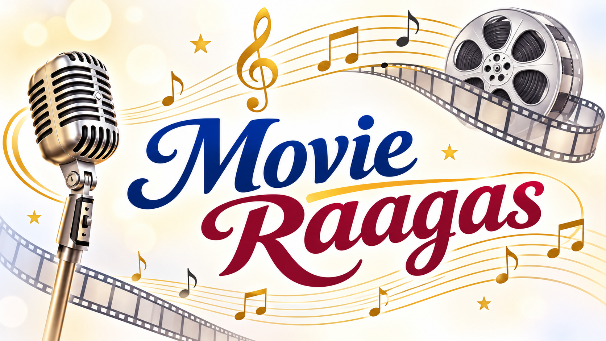

Music plays an important role in Indian cinema. Behind many beautiful film songs lies the magic of Carnatic music and its wonderful Raagas. A Raaga is a melodic framework that gives a unique identity, mood and emotional expression to a musical composition.
Tamil film music composers have beautifully blended classical Raagas with modern musical arrangements. Whether it is a romantic melody, a devotional song, a sad composition or a cheerful number, Raagas add depth and beauty to the songs we enjoy.
This website brings together various Carnatic Raagas used in Tamil film music. Select a Raaga from the selection box above to explore the movies and songs associated with it.
Discover the connection between classical music and cinema, and enjoy the timeless melodies created by our music composers.